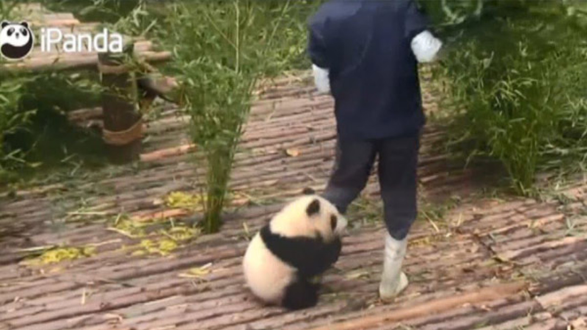

About my panda
My panda is fluffy and cuddly who gives free hugs to everyone.
 Panda and his free hugsPanda's Characteristics
- He's got soft fluffy fur
- He's got gentle eyes
- He's giving hugs to keep him alive
Panda's Friends
Panda has made a lot of friends from all over the world. Click on the links below to read more about them: